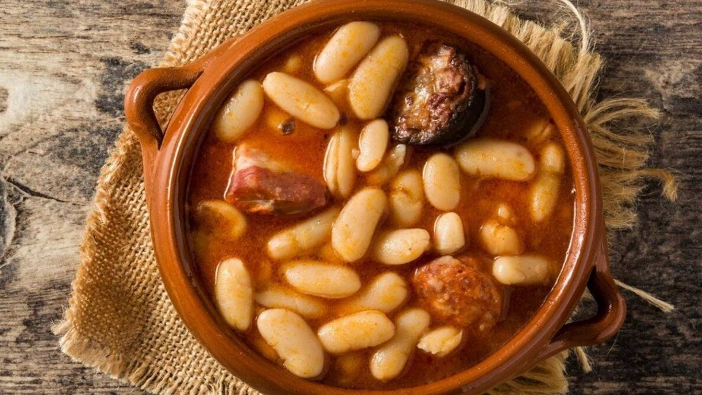

Fabada

Description
La forma de cocinar este plato es simple, aunque no fácil. Varios factores pueden echar a perder la receta: no desalar bien las carnes, cocer a fuego fuerte, que el agua empleada no reúna las condiciones necesarias.
Pero os comento que lo más importante son sus ingredientes. Al igual que en la cocina gallega la asturiana tiene una materia prima de excelente calidad que ayuda a que sea de las más apreciadas de España. Fabes hay muchas pero como las asturianas ningunas.
La novelista Emilia Pardo Bazán fue la primera en escribir la receta de la auténtica fabada asturiana allá por 1930 donde aseguraba que se elaboraba con fabes, tocín y morciella, aunque existe controversia al respecto. Quizás Emilia Pardo Bazán sea la primera persona en poner por escrito la receta. Pero la fabada va mucho más allá, ya que viene derivada del pote asturiano, que fue perdiendo ingredientes hasta dar lugar a la fabada.
Es una receta sencilla en la que priman ingredientes de gran calidad y un tiempo de cocción bastante lento. Una receta que hecha con cariño y con los ingredientes adecuados te saldrá como si estuvieses en Asturias.
Ingredients
- 500 g de fabes
- 250 g de panceta curada asturiana
- 2 chorizos asturianos
- 2 morcillas asturianas
- Agua
- 200 g de hueso de jamón
- Sal (al gusto)
- 3 hebras de azafrán
Steps
- Añadimos las alubias en una cazuela, a ser posible baja y ancha (si es de barro mejor). Cubrimos con agua hasta que quede un par de dedos por encima de las mismas. Removemos otra vez para que se junte todo bien. Calentamos a fuego alto hasta que rompa a hervir.
- Cuando empiece a hervir introducimos la panceta, los chorizos, el hueso de jamón y las morcillas (previamente pinchadas para evitar que revienten).
- Procurad que las morcillas y los chorizos permanezcan siempre en la parte superior pare evitar posibles roturas que nos estropearían la fabada.
- Espumeamos durante unos minutos. Es decir, retiramos la espuma que normalmente contiene impurezas y a la vez desgrasamos un poco el caldo. Cuando lleve 1/2 hora cociendo a fuego alto le añadimos las hebras de azafrán diluidas en un poco de caldo caliente de la cazuela.
- Bajamos la temperatura de cocción. Añadimos sal al gusto, es importante probar el caldo ya que hemos echado el hueso de jamón y pueden quedar saladas.
- Dejamos que se cocinen lentamente a temperatura baja durante 2 horas. Siempre removiendo de vez en cuando con una cuchara de madera sin romperlas. Durante estas dos horas, añadimos agua fría en dos ocasiones para «asustarlas» (rompe el hervor y ayuda a su perfecta cocción).
- Probamos la fabada para ver si ya están tiernas y rectificamos de sal. Una vez probadas y tiernas apartamos del fuego y dejamos reposar una hora aproximadamente.
- A continuación retiramos los chorizos, la morcilla, la panceta y los huesos de jamón. Preparamos la carne, cortando los embutidos en rodajas generosas. Troceamos la panceta y aprovechamos la carne del hueso. Reservamos para la presentación. Para emplatar lo mejor es un plato hondo con la fabada y la carne encima, así de fácil.
Main page